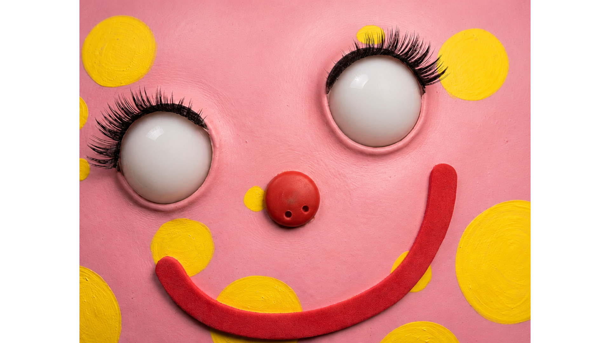
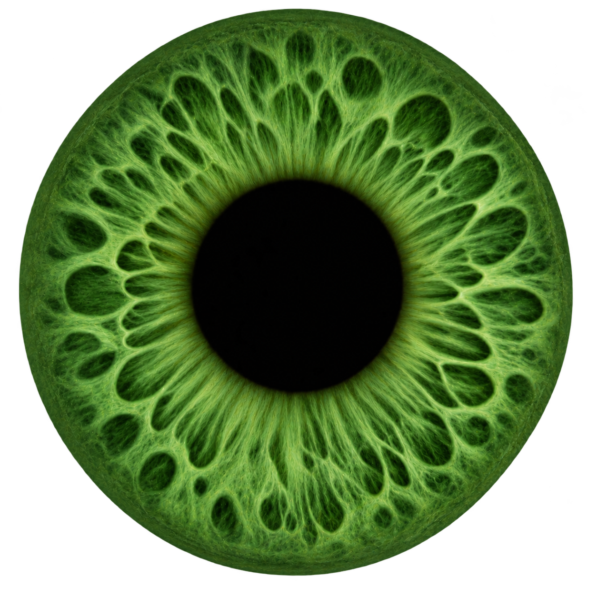

분홍색 바탕에 노란색 점(얼룩)이
가득하며,
기괴하게 툭 튀어나온 눈과
커다란 입을 가지고 있다.
‘블로비(Blobby!)’라는 단어 하나만
반복해서 말하며
톤과 속도만으로 의사소통을 한다.
영국 BBC의 버라이어티 쇼
‘노엘스 하우스 파티(Noel’s House Party)’의 코너 중 하나로,
유명인들을 속이기 위한 가짜 어린이 TV 캐릭터로 기획 되었다.
스튜디오를 난장판으로 만들거나
예측할 수 없는 혼란스러운 행동을 벌여,
어린이들에게는 웃음을, 성인들에게는
다소 기괴하거나 공포스러운 느낌
(‘악몽 같은 캐릭터’)을 주는 독특한
대중문화 현상으로 남았다.